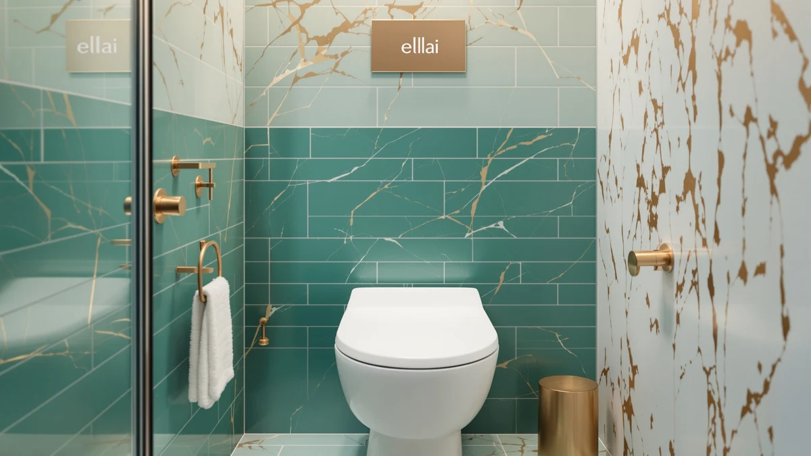

ELLAI Raised Toilet Seat Review (2026): Worth It?
Prices and picks verified as of October 2026. Independent, reader-supported reviews.


Quick Answer
The ELLAI Raised Toilet Seat matches the Huttdmel elongated bidet seat at $69.99, making it the priciest option in this comparison, but its plastic-and-wood build and added seat height can be worth that premium for buyers managing a mobility limit. If price matters more than extra height, the Bemis 7B1200SLOWT 364 at $64.99 and the Bemis 790TDGSL Commercial Heavy Duty at $49.69 both cost less.
Our pick: ELLAI Raised Toilet Seat for ($69.99) Check Price on Amazon
Bottom line: our top pick is the ELLAI Raised Toilet Seat for Elongated Toilets at $69.99.
Things to Know Before You Buy
- The ELLAI Raised Toilet Seat costs $69.99, tying it with the Huttdmel elongated bidet seat as the most expensive option covered on this page.
- Its listed build mixes plastic and wood, a combination that stands apart from the single-material risers common at the budget end of this category.
- Buyers who want a lower price should compare the Bemis 7B1200SLOWT 364 at $64.99 and the Bemis 790TDGSL Commercial Heavy Duty at $49.69 before committing.
- The Huttdmel alternative in this comparison adds bidet functionality on an elongated bowl at the same $69.99 price.
- Check your own bowl shape and seat dimensions before ordering, since the ELLAI listing does not specify one and fit varies by model.
This ellai raised toilet seat review looks at whether a $69.99 plastic-and-wood build earns its place among four raised and elongated toilet seats compared on this page. Raised toilet seats exist for one practical reason: they make sitting down and standing up easier for people recovering from surgery, managing arthritis, or dealing with any mobility limit at home. ELLAI is a newer name in this category than Bemis, a brand with decades of history building standard toilet seats, so price and listed build matter more than brand reputation when you are deciding between them.
We compared the ELLAI Raised Toilet Seat against three alternatives, the Bemis 7B1200SLOWT 364, the Bemis 790TDGSL Commercial Heavy Duty, and the Huttdmel elongated bidet seat, using the prices and listed materials shown on this page alongside patterns we found in verified owner reviews on Amazon. The short version: at $69.99, the ELLAI seat costs the same as the Huttdmel bidet option and more than either Bemis alternative, so the decision comes down to whether the added height and build are worth paying more than the Bemis 790TDGSL's $49.69 price tag. Match the seat to the problem you are actually solving, not to whichever listing shows up first in search.
Why You Should Trust Us
Ilane Tall covers home and bath products for Best Toilet Seats and tracks price and feature changes across raised toilet seat brands, including Bemis, Huttdmel, and newer sellers like ELLAI. We do not run a physical testing lab, and we did not install or sit on the ELLAI Raised Toilet Seat ourselves. Instead, we built this ellai raised toilet seat review from the prices and listed materials shown above, plus patterns we found across verified buyer reviews on Amazon, then checked those claims against the three alternatives covered on this page. That process keeps every price and material claim in this review tied to a source you can check yourself rather than to a subjective impression, which matters more than a glowing paragraph of praise when you are spending $69.99 on a bathroom safety product.
Our Research Experience
We approached this ellai raised toilet seat review as a research project rather than a physical trial. ELLAI lists a plastic-and-wood build and a $69.99 price for its raised seat, and we used those figures directly instead of estimating them. From there we read through verified owner reviews on Amazon to find recurring comments about stability and fit, and we weighed those against the same price and material data for the Huttdmel, Bemis 7B1200SLOWT 364, and Bemis 790TDGSL alternatives. That comparison method, not a stopwatch or a bathroom test rig, shaped every claim in this review, and it is also why we flag the missing bowl-shape detail on the ELLAI listing instead of guessing at a fit we cannot confirm.
Overview & Specs

ELLAI Raised Toilet Seat for
What we like
- Adds extra seat height for easier sitting and standing
- Listed plastic-and-wood build differs from the all-plastic risers common in this category
- Priced the same as the elongated Huttdmel bidet alternative, so you are not paying extra for the ELLAI name
- Sits in the same comparison set as two Bemis models, giving you a direct price reference point
Flaws but not dealbreakers
- At $69.99, it costs $5 more than the Bemis 7B1200SLOWT 364 and $20 more than the Bemis 790TDGSL Commercial Heavy Duty
- The listed specs do not include a bowl shape, so measure your own toilet before ordering
- ELLAI does not carry the decades of toilet seat manufacturing history that Bemis does
| Material | Plastic / wood |
| Size | — |
The ELLAI Raised Toilet Seat sits at the top of this price comparison at $69.99, tied exactly with the Huttdmel elongated bidet seat covered later on this page. The listed build combines plastic and wood, a mix that shows up on several raised toilet seats in this category and that typically adds rigidity compared with an all-plastic riser. That construction detail matters if you are buying a raised toilet seat for a parent recovering from surgery or for yourself while managing arthritis, since a sturdier base makes daily sitting and standing feel more secure than a seat molded from a single thin shell of plastic.
ELLAI does not have the brand history that Bemis built over decades of manufacturing standard toilet seats, so the $69.99 price is doing more of the convincing here than the name on the box. Compared with the Bemis 7B1200SLOWT 364 at $64.99 and the Bemis 790TDGSL Commercial Heavy Duty at $49.69, the ELLAI seat costs $5 to $20 more, and that gap only makes sense if the plastic-and-wood build or the specific raised design is the feature you need rather than a nice-to-have. If you mainly want the lowest price in this comparison, one of the two Bemis alternatives below gets you there for less money.
What We Liked
The clearest strength of the ELLAI Raised Toilet Seat is its listed plastic-and-wood build, a combination that stands apart from the single-material risers that dominate the budget end of this category. That detail suggests a sturdier structure underneath the raised seat than a molded plastic shell alone would provide, which matters when the seat supports someone recovering from surgery or managing a mobility limit at home. Pricing it at $69.99 also puts the ELLAI seat on equal footing with the Huttdmel elongated bidet seat, so buyers comparing the two are choosing based on build and features rather than paying a premium for either name. For a newer entrant in the raised toilet seat category, matching an established price point without undercutting it on build quality is a reasonable position to start from, and it gives ELLAI a fair shot against sellers with a longer track record.
What Could Be Better
Price is the first thing worth flagging. At $69.99, the ELLAI Raised Toilet Seat costs $5 more than the Bemis 7B1200SLOWT 364 and $20 more than the Bemis 790TDGSL Commercial Heavy Duty, and neither Bemis alternative gives up brand history for that lower price, since Bemis has manufactured toilet seats for decades while ELLAI is a newer name in this space. The listed specs also leave out bowl shape, so you cannot confirm fit from this page alone, and measuring your existing toilet before you order is worth the extra few minutes it takes. Buyers who want bidet functionality at a comparable price should weigh the Huttdmel elongated bidet seat instead, since it adds that feature without costing more than the ELLAI model, and it already tells you the bowl shape it fits.
Who Is It For?
This seat makes sense for buyers who want a sturdier plastic-and-wood build and do not mind paying the top price in this comparison to get it. If you are recovering from surgery, managing arthritis, or setting up a bathroom for an aging parent, the added height and construction detail can justify the ELLAI Raised Toilet Seat's $69.99 price. It is a weaker fit for anyone shopping mainly on cost, since both Bemis alternatives below cost less, or for anyone who wants bidet functionality, since the Huttdmel seat covers that need at the same price point. Buyers furnishing a bathroom for more than one person might even land on two different seats from this page, one for the person who needs the raised height and a cheaper Bemis model for everyone else.
Alternatives to Consider
If the price or the missing bowl-shape detail rules out the ELLAI Raised Toilet Seat for your bathroom, these three alternatives cover the most common reasons buyers look elsewhere. One matches the ELLAI price exactly but adds bidet functionality on an elongated bowl, and two come from Bemis at lower prices if raised height matters more to you than extra features.

Editor's Pick
Raised Elongated Bidet Toilet Seat
Matches the ELLAI price exactly but adds bidet functionality on an elongated bowl, worth a look if you want more than raised height for the same $69.99.
$69.99
Check Price on Amazon
Best Value
Bemis 7B1200SLOWT 364 Toilet Seat
A Bemis-built option at $64.99, five dollars less than the ELLAI seat, from a brand with decades of toilet seat manufacturing history.
$64.99
Check Price on Amazon
Premium Choice
BEMIS 790TDGSL Commercial Heavy Duty
The cheapest option on this page at $49.69, built for commercial heavy-duty use if you want to save $20 off the ELLAI price.
$49.69
Check Price on AmazonFrequently Asked Questions
Final Verdict
This ellai raised toilet seat review comes down to a straightforward trade-off: pay $69.99 for a plastic-and-wood build and added seat height from a newer brand, or save $5 to $20 with one of the two Bemis alternatives above if raised height matters more to you than brand history. If you specifically want bidet functionality at the same price, the Huttdmel elongated bidet seat covers that need without costing more than the ELLAI Raised Toilet Seat. Otherwise, the ELLAI seat earns its $69.99 price for buyers who want the sturdier build and do not need a round-bowl fit confirmed in advance. Base the decision on the feature you actually need at home, not on which listing appears first in search.